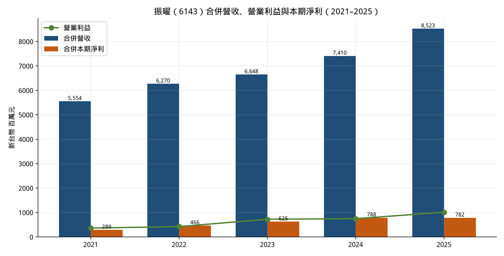
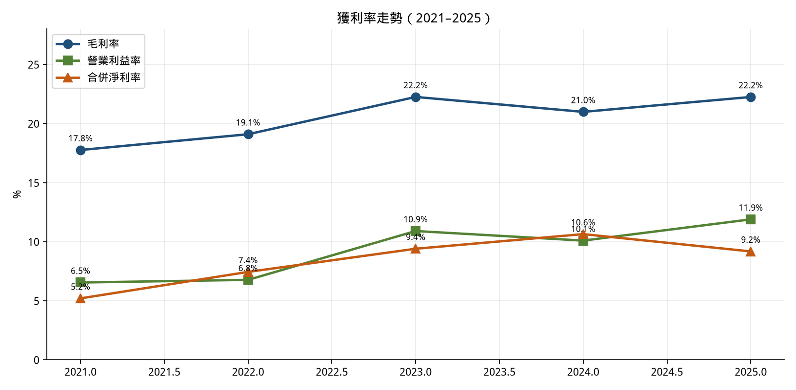
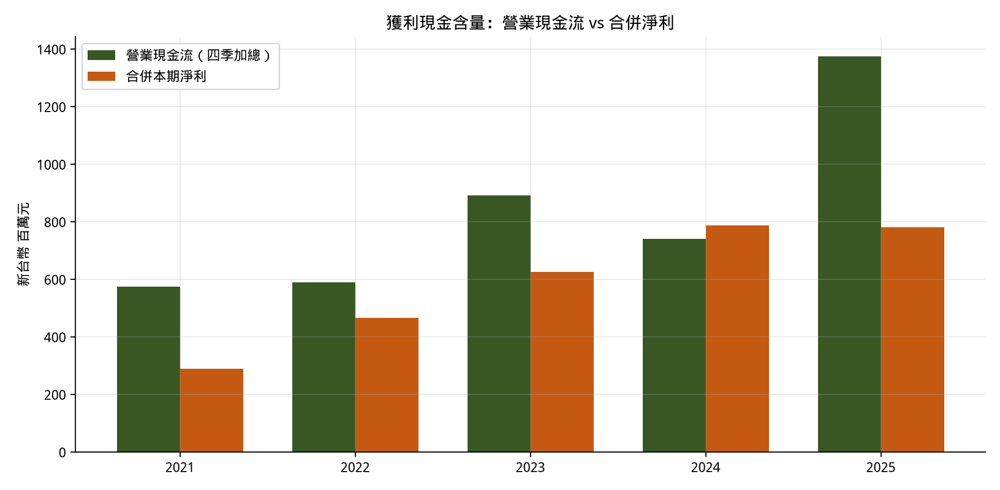
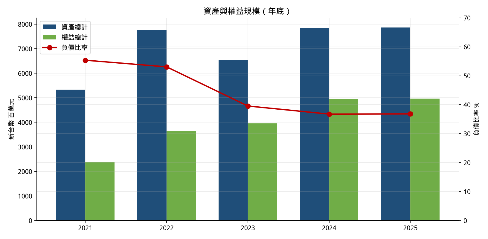
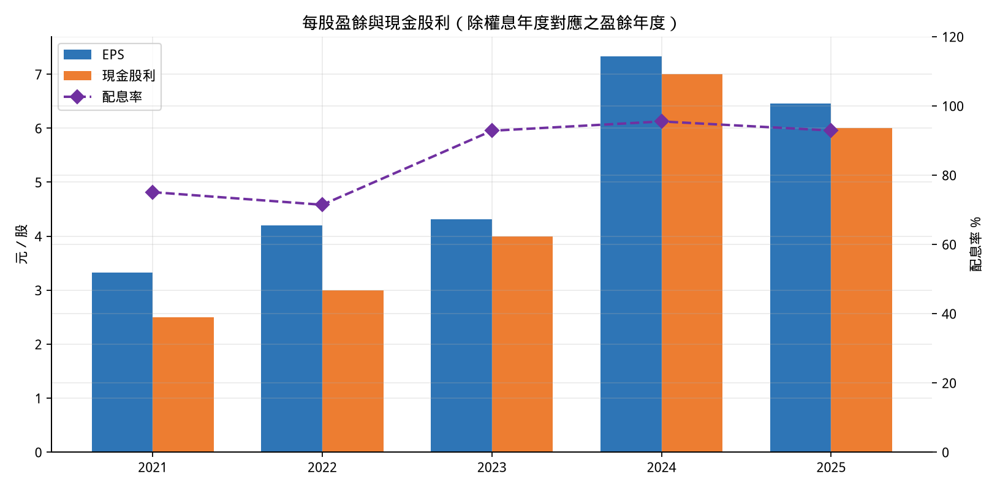
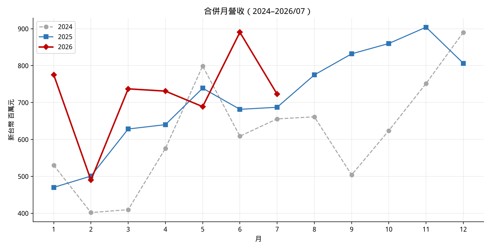
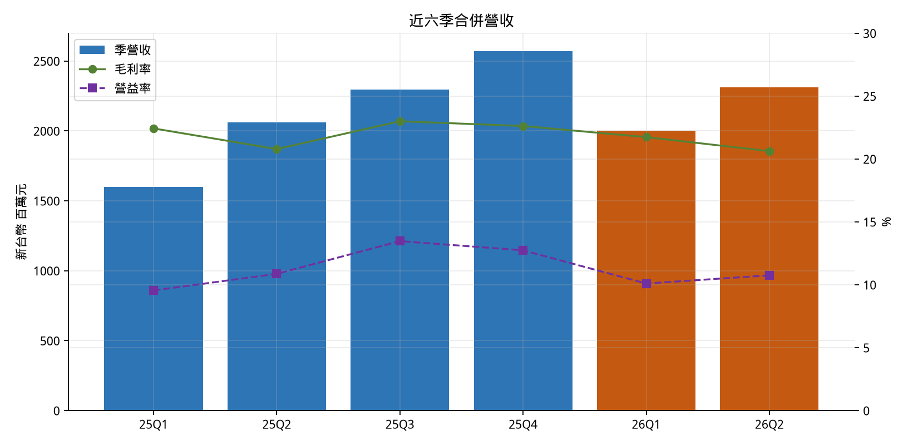

近五年財務分析報告
暨公司／產業未來五年前景與全球競爭力評估
報告時點：2026-08-27（台北）
資料截止：合併財務報告至 2026 年第 2 季；月營收至 2026 年 7 月；股價觀察日 2026-08-27（HiStock 收盤 90.4 元）
性質：以公開資訊觀測站公告、公司永續報告書／法說會、月營收與可核對之財經轉載為準的整理分析。非投資建議、非買賣推薦、非目標價。前景段落為情境分析，不是保證發生的預測。
本文件所有量化數字均可回溯至文末「資料來源」。無法取得官方原件之項目已標明推估或省略，不補 placeholder。
振曜是上櫃通信網路公司，核心身份是電子書閱讀器 ODM／軟硬體整合代工，並以集團化方式持有光纖／電聲／醫材等子公司。董事長專訪與法說會口徑：集團年出貨電子書閱讀器約 200 萬台、約當全球年產量六分之一；主要封閉系統客戶為樂天 Kobo（全球第二品牌），亞馬遜 Kindle 主產線仍由鴻海等組裝、振曜並非 Kindle 主力代工廠。
近五年財務主軸有三條：
2026 年上半年合併營收 43.12 億（年增 17.9%）、歸屬母公司 EPS 3.03 元（去年同期 1.62 元）；1–7 月累計營收年增 15.8%。管理層 2026/05/29 法說會指引「全年挑戰雙位數成長、下半年優於上半年」，與年迄今營收軌跡相符。光纖子公司沛亨（6291）受惠 AI 資料中心，2026Q1 EPS 3.00 元、訂單能見度談到 2027 年初，但振曜對沛亨持股約四成，合併表會放大營收、母公司淨利只能吃到持股比例。
| 項目 | 內容 |
|---|---|
| 公司 | 振曜科技股份有限公司（Netronix, Inc.） |
| 代號／市場 | 6143.TWO，2002/01/28 上櫃，通信網路業 |
| 成立 | 1997/06/06，新竹竹北 |
| 簽證會計師 | 安侯建業（KPMG）黃海寧、鄭安志 |
| 營運據點 | 臺灣、美國、日本、德國、中國大陸、越南（2024 ESG）；法說會稱全球九個生產據點 |
| 員工 | 2024 年底集團正式員工 1,426 人，母公司 377 人 |
| 產品線 | 電子紙應用（閱讀器、筆記本、ESL、行李標、廣告看板）、電聲、網通、加工組裝；子公司含光纖、POS、醫材 |
電子閱讀器產業可分成三層：電子紙材料／模組（元太 E Ink 近乎獨占）→ ODM／OEM 整機 → 品牌與內容生態（Amazon Kindle、Kobo、文石、掌閱等）。振曜卡在中間層，而且不是「只組硬體」：對 Kobo 這類封閉系統客戶，它做同步工程（規格未定就進場、軟硬體與人機介面一起磨），毛利結構高於純組裝。Good e-Reader 對供應鏈的記述：Kobo 設計、振曜製造；Kindle 由 Amazon Lab126 設計、鴻海在中國組裝。
2026Q1 法說會：電子紙應用事業約佔合併營收六成，其餘四成為沛亨、台生材等子公司。電子紙廣告看板（E-Poster）當時仍為個位數營收占比，公司目標 2026 年挑戰兩位數、2027–2028 進入較快成長。沛亨光纖終端客戶幾乎全是美系四大 CSP（涵蓋 Google、Amazon、Microsoft 等），佔比高達九成以上。
上游關鍵：與元太長期策略聯盟、交叉持股，並曾在揚州合資模組廠。公司對電子紙材料供給的公開態度是「不擔心」。這是競爭壁壘，也是集中度風險——材料仍高度繫於單一技術路線。
因此：看合併營收與營業利益，看的是集團戰力；看 EPS 與現金股利，看的是母公司股東能分到的那一塊。2025 年兩者方向不一致，分析上必須拆開。
損益 2021–2024：公司 2024 ESG 報告書（引自安侯建業簽證合併財務報表）。2025：公開資訊觀測站董事會決議公告（MoneyDJ／經濟日報轉載）。季報細項：HiStock 轉公開資訊。單位除另註外為新台幣千元。
| 科目 | 2021 | 2022 | 2023 | 2024 | 2025 |
|---|---|---|---|---|---|
| 營業收入 | 5,554,091 | 6,269,563 | 6,648,322 | 7,410,030 | 8,523,490 |
| 年增率 | — | +12.9% | +6.0% | +11.5% | +15.0% |
| 營業成本 | 4,567,741 | 5,072,598 | 5,169,191 | 5,854,986 | 6,627,397 |
| 營業毛利 | 986,350 | 1,196,965 | 1,479,131 | 1,555,044 | 1,896,093 |
| 毛利率 | 17.8% | 19.1% | 22.3% | 21.0% | 22.3% |
| 營業費用 | 622,888 | 772,639 | 754,425 | 807,304 | — |
| 研究發展 | 213,516 | 231,825 | 191,026 | 175,416 | — |
| 營業利益 | 363,462 | 424,326 | 724,706 | 747,740 | 1,013,300 |
| 營業利益率 | 6.5% | 6.8% | 10.9% | 10.1% | 11.9% |
| 營業外淨額 | 14,801 | 183,227 | 96,603 | 244,012 | −37,550 |
| 稅前淨利 | 378,263 | 607,553 | 821,309 | 991,752 | 975,750 |
| 本期淨利（含 NCI） | 288,838 | 466,465 | 625,005 | 788,335 | 781,969 |
| 歸屬母公司淨利 | n/a* | n/a* | 370,953 | 630,464 | 555,943 |
| 非控制權益淨利 | n/a* | n/a* | 254,052 | 157,871 | 226,026 |
| 基本 EPS（元） | 3.33 | 4.20 | 4.31 | 7.33 | 6.46 |
*2021–2022 歸屬母公司淨利之 MOPS 原公告全文本次未取得完整數字，故不以推估值填表。EPS 取 HiStock（同源公開資訊）。2025 營業成本＝營收−毛利；營業外淨額＝稅前−營業利益。


下列營業現金流為 HiStock 單季數字加總（同源公開資訊現金流量表），用於看「帳上獲利有沒有變成現金」，不是取代簽證年報的精確年度現金流量表。
| 2021 | 2022 | 2023 | 2024 | 2025 | |
|---|---|---|---|---|---|
| 營業現金流（四季加總，百萬） | 574 | 590 | 892 | 741 | 1,375 |
| 合併本期淨利（百萬） | 289 | 466 | 625 | 788 | 782 |
| OCF／淨利 | 2.0× | 1.3× | 1.4× | 0.94× | 1.8× |

2024 年 OCF 略低於淨利（營運資金占用，符合營收衝高、年底存货／應收上升的典型型態）；2025 年現金含量大幅回升。2025Q2 投資活動出現大額淨流入（HiStock +6.80 億），屬金融資產處分／到期的可能性高，不宜解讀為本業資本支出轉負。整體判斷：近五年沒有「獲利靠應計、現金跟不上」的系統性惡化；2025 年現金轉換是加分項。
| 年底 | 2021 | 2022 | 2023 | 2024 | 2025 | 2026Q2 |
|---|---|---|---|---|---|---|
| 資產總計（千元） | 5,329,796 | 7,771,994 | 6,555,468 | 7,836,942 | 7,863,758 | 8,291,915 |
| 負債總計 | — | — | 2,592,728 | — | 2,895,452 | 3,594,808 |
| 負債比率 | 55.4% | 53.1% | 39.6% | 36.8% | 36.8% | 43.4% |
| 權益總計 | 2,378,601 | 3,646,892 | 3,962,740 | 4,956,226 | 4,968,306 | — |
| 歸屬母公司權益 | — | — | 2,837,481 | — | 3,076,607 | 2,829,884 |
| 流動比率 | 155% | 169% | 217% | 241% | 230% | 196% |
| 每股淨值（元） | 25.93 | 31.94 | 32.97 | 36.50 | 35.75 | 32.88 |
| 股本（千元） | 830,069 | 875,069 | 875,069 | 875,069 | 860,589 | 860,589 |
2021–2025 資產／權益／流動比／淨值：聚財網季資產負債表；2023／2025／2026Q2 負債與母公司權益：MOPS 公告。2026Q2 負債比＝3,594,808／8,291,915。

| 2023 | 2024 | 2025 | |
|---|---|---|---|
| 歸屬母公司淨利（千元） | 370,953 | 630,464 | 555,943 |
| 期末母公司權益 | 2,837,481 | n/a | 3,076,607 |
| 期末 ROE（母公司淨利／期末母公司權益） | 13.1% | — | 18.1% |
| 合併淨利率 | 9.4% | 10.6% | 9.2% |
| 母公司淨利率（歸屬／營收） | 5.6% | 8.5% | 6.5% |
| 資產週轉（營收／期末資產） | 1.01× | 0.95× | 1.08× |
2025 年期末 ROE 18.1% 仍屬電子下游裡不錯的水準，但低於若用 2024 年母公司淨利 6.30 億所能達到的高峰。分叉來自：淨利率（母公司口徑）從 8.5% 掉到 6.5%，不是週轉變差。NCI 佔合併淨利比重：2023 年 40.6%（沛亨當年 EPS 10.32 元特高）、2024 年 20.0%、2025 年 28.9%。集團越賺錢、少數股東分走越多，是持股結構問題，不是電子書突然不賺錢。
PChome 2026Q2 累計 ROE 8.41%、ROA 5.09% 為期中年化／累計口徑，不能直接與全年 ROE 相比。
| 盈餘年度 | EPS | 現金股利 | 配息率 | 除息日 | 除息前參考價 | 殖利率（該次） |
|---|---|---|---|---|---|---|
| 2021 | 3.33 | 2.50 | 75% | 2022/08/11 | 53.1 | 4.7% |
| 2022 | 4.20 | 3.00 | 71% | 2023/08/10 | 75.9 | 4.0% |
| 2023 | 4.31 | 4.00 | 93% | 2024/06/07 | 137.0 | 2.9% |
| 2024 | 7.33 | 7.00 | 96% | 2025/04/11 | 108.5 | 6.5% |
| 2025 | 6.46 | 6.00 | 93% | 2026/04/10 | 99.9 | 6.0% |
CMoney 股利資料；配息率為該站揭露。公司連續 21 年發現金股利。

2023 年起配息率跳到九成以上，幾乎把當年 EPS 吐回給股東。優點是現金報酬明確、在 2026 年 8 月股價約 90 元附近、以 2025 年 6 元股利靜態殖利率約 6.6%。代價是：沛亨若要做 3–5 倍光纖擴產、電子紙看板若要墊庫存與通路，資金更多要靠子公司自身現金、銀行或母公司既有部位，而不是母公司大量留存。這與「高成長資本支出型」公司的財務政策不同，比較像成熟現金牛＋衛星事業爆發的混合體。


| 2026Q1 | 2026Q2 | 2026H1 | YoY（H1） | |
|---|---|---|---|---|
| 營業收入（千元） | 2,002,030 | 2,310,061 | 4,312,091 | +17.9% |
| 營業毛利 | 435,329 | 476,445 | 911,774 | +15.9% |
| 毛利率 | 21.7% | 20.6% | 21.1% | 去年同期 21.5% |
| 營業利益 | 202,251 | 248,372 | 450,623 | +19.7% |
| 稅前淨利 | 241,013 | 261,191 | 502,204 | — |
| 本期淨利 | 193,429 | 213,034 | 406,463 | — |
| 歸屬母公司 | 121,058 | 139,362 | 260,420 | — |
| EPS（元） | 1.41 | 1.62 | 3.03 | 去年同期 1.62 |
MOPS 2026Q1／Q2 公告；Q2 單季歸屬母公司＝H1−Q1。2026Q2 單季稅前取 HiStock。
振曜同時暴露在三條產業曲線上，斜率差很多。把「電子紙」當成單一產業會誤判。
| 來源 | 口徑 | 現況／起點 | 終點 | CAGR |
|---|---|---|---|---|
| Mordor Intelligence | 全球 e-reader | 2026：USD 88.3 億 | 2031：USD 119.4 億 | 6.24%（2026–2031） |
| Market Research Future | 全球 e-reader | 2025：USD 114 億 | 2035：USD 220.5 億 | 約 6.8% |
| Mordor | E-ink Kaleido 彩色 | — | 至 2031 | 9.23% |
| Valuates | 彩色電子墨水閱讀器 | 2023：USD 6.84 億 | 2030：USD 10.48 億 | 6.2% |
兩家機構對「整個閱讀器市場」的絕對金額差一截（定義含不含配件、通路加價、區域覆蓋不同），但成長率收斂在 約 6–7%。這不是 AI 伺服器那種爆發曲線。成長引擎被點名的是：彩色電子紙、教育／機構採購、護眼與減紙政策、入門機打開新興市場、以及閱讀器內建 AI 摘要／翻譯帶來的換機。
結構比總量重要：Mordor 稱 2025 年 E-ink Carta 黑白仍佔顯示技術約 71%，彩色 Kaleido 增速較快。公司與通路的觀察是「彩機不是取代黑白，是打開雜誌／漫畫／圖文客群、做大總量」。這與 2024–2026 振曜出貨與毛利改善吻合。一旦彩機滲透率進入高位，閱讀器又會回到接近整體市場的 6% 增速——除非看板、筆記本、AI 功能打開新品類。
品牌格局：Amazon Kindle 仍是全球最大（各方估計約五成至七成，口徑不一）；Kobo 第二；中國品牌（文石 Onyx、掌閱、科大訊飛、漢王、Bigme 等）在中國市場與全球 Android 電子紙平板側成長快。Amazon 已退出中國，中國市場與國際 Kindle／Kobo 市場幾乎是兩盤棋。
| 來源 | 口徑 | 2025 | 2030 | CAGR |
|---|---|---|---|---|
| Mordor / GII | 電子紙顯示器整體 | USD 29.9 億 | USD 58.9 億 | 14.54% |
| Mordor | 其中電子貨架標籤 ESL | — | — | 15.64% |
閱讀器仍佔電子紙應用約一半營收，但 ESL、大型輔助顯示、零售／交通看板是機構預估裡長得比較快的區塊。驅動因子包括歐盟包裝與減紙規範、零售動態訂價、日光下可讀與極低功耗。振曜自己把廣告看板比作 2008–2009 年電子書的拓荒期，目標從千台級拉到萬台級再看是否指數化。這條曲線若成立，對 2027–2030 的營收結構影響會大於「再賣多一點 Kobo」；若價格與 LCD 差距縮不下來，就會停在利基。
公司已公開放棄把資源押在較低毛利的電子標籤（ESL）主力戰場，專注閱讀器＋看板。這代表它不會自動吃到 ESL 15% CAGR 的全部，而是選了較高毛利、較慢放量的看板路徑。
這不是振曜母公司的電子紙本業，但已進入合併報表。傳統銅纜難以支撐 400G／800G／1.6T 機櫃互連，AOC 光纖成為 AI 資料中心「中距離、高密度」的主力之一。沛亨 2026Q1：營收 6.6 億年增 49%、毛利率約 38%、EPS 3.00 元；光纖產能目標由 3 倍上修至 3–5 倍；訂單談到 2027Q1；預製棒以美商康寧等為主、交期十個月以上。這條產業的五年前景綁的是 CSP 資本支出週期，不是閱讀人口。上行空間大，下行則是典型的「擴產遇上資本支出暫停」。
| 層級 | 玩家 | 與振曜關係 |
|---|---|---|
| 材料／面板 | 元太 E Ink（近乎獨占） | 上游夥伴、交叉持股、合資模組；振曜的護城河也是依賴 |
| Kindle 組裝 | 鴻海（及歷史上其他大型 EMS） | 規模最大的硬體組裝；毛利較低；拿走全球最大品牌 |
| Kobo／Tolino 等封閉系統 | 振曜 | 軟硬整合 ODM；這是振曜的主戰場 |
| 自有品牌＋自建工廠 | 文石 Onyx、部分中國品牌 | 垂直整合、價格帶往下、Android 生態；彩機追趕者 |
| 其他 EMS／ODM | 仁寶、金寶、天翰等（公開討論中常被點名） | 可能承接品牌轉單；同步工程深度通常不如振曜對 Kobo |
| 白牌／利基 | Linfiny（索尼／元太）、PocketBook 代工鏈等 | 分割利基，不構成單一霸主 |
| 構面 | 相對位置 | 說明 |
|---|---|---|
| 閱讀器 ODM（非 Kindle） | 全球前段 | Kobo／二線品牌軟硬整合的首選之一 |
| 閱讀器整機全球市占（含 Kindle） | 中游偏上 | 出貨量可觀但不是第一品牌的工廠 |
| 電子紙材料 | 不適用（非玩家） | 競爭力來自綁元太，不是自己做電子墨水 |
| 彩色整機導入 | 由「獨家」退為「領先群」 | 窗口仍在，壁壘變薄 |
| 電子紙看板 | 早期進入者 | 尚未被財報證實為第二成長曲線 |
| AI 光纖（透過沛亨） | 供應鏈合格者 | 有 CSP 訂單與擴產，但持股與預製棒是約束 |
| 財務體質 | 穩健、偏股東分配 | 負債低、配息高、成長資金靠經營現金與子公司 |
| 估值位置（觀察、非建議） | 低於近一年區間中位 | TTM PE 約 11–12 倍、靜態殖利率約 6% 級距；低 PE 可能反映 NCI、客戶集中與「成長是否被定價」的分歧 |
以下不是目標價，也不是公司官方財測。2026 年僅管理層給了「全年雙位數營收成長」的方向性指引；2027 以後沒有可核對的官方數字，故用情境描述結構，不編造 2030 年營收／EPS。
與其預測股價，不如每年核對這些公開可得的指標：
過去五年的振曜，是一家財務由槓桿偏高轉為穩健、本業因彩色電子紙而升級、股東以高現金股利參與成果的上櫃中型公司。營收與營業利益的故事是向上的；2025 年 EPS 下滑不應被讀成電子書需求消失，而應被讀成「業外轉弱＋子公司少數股東分走更多」。
未來五年，它所處的閱讀器產業大概率是溫和成長＋結構升級，不是新的十倍賽道；真正可能讓集團曲線變陡的是電子紙看板（尚未被財報證實）與沛亨光纖（已被 2026Q1 財報證實、但母公司只能吃持股）。全球競爭力在「Kobo 生態的軟硬整合 ODM」這個細分市場是前段班；在「全球閱讀器出貨」這個大市場，它不是第一，也攔不住 Kindle 與中系品牌。
若只用一句話給決策者：這是一門有現金流、有利基護城河、成長正在從「彩機爆發」過渡到「必須證明第二曲線」的生意；競爭力夠用、不夠無敵；財務報表比故事誠實，NCI 與高配息是讀報時一定要一起看的兩個分母。
圖表檔與本 HTML 同目錄之 netronix_6143_20260827/。PDF 由 WeasyPrint 自本檔轉出。